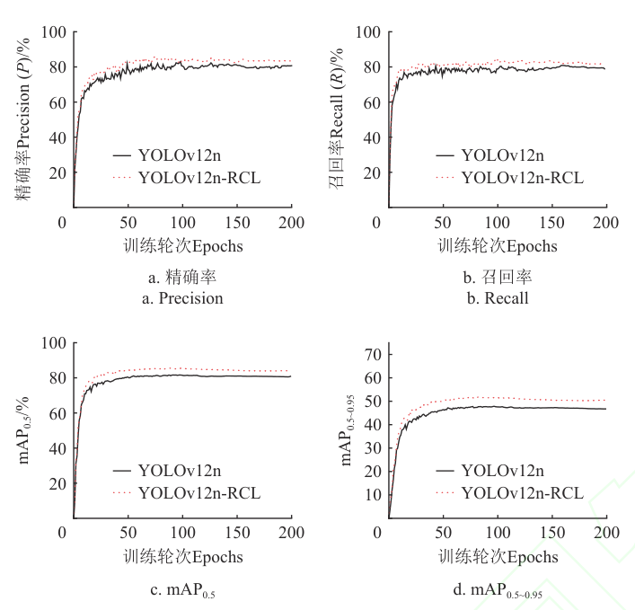
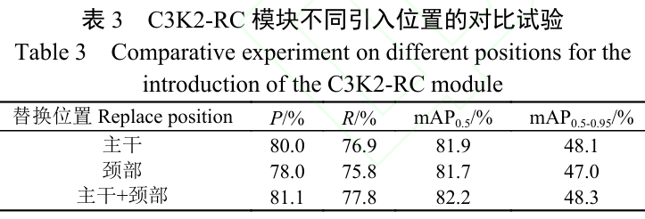
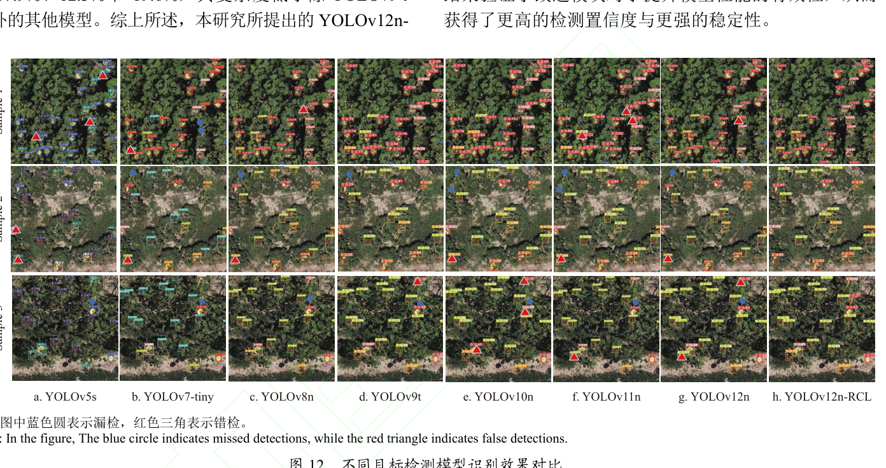

C3K2-RC 模块 + CARAFE 上采样 + LSCSBD 轻量化检测头，实现检测精度与轻量化的有效平衡。
融合 RFAConv 与 CA 注意力，扩大感受野并建立空间坐标依赖，增强多尺度病害特征提取。
内容感知的特征重组机制，增强病斑边缘信息和纹理特征的恢复能力。
分离批量归一化的轻量级共享卷积检测头，减少参数量提升小尺度检测。
P=83.4%、R=81.2%、mAP0.5=84.8%、mAP0.5-0.95=50.2%，较 YOLOv12n 分别提高 3.8、3.2、3.4、4.0 个百分点；参数量压缩至 2.11 M。
不同等级的病斑形态多变，导致特征提取困难。
叶片遮挡等复杂背景因素，增加漏检风险。
部分病斑特征差异细微及边界模糊，易导致误检。
将盘腐病划分为 5 个等级：0 级（无病斑）、1 级（25%以下）、2 级（26%-50%）、3 级（51%-75%）、4 级（76%以上）。
fw = Softmax(g1×1Conv(Avgpool(X))); fe = ReLU(BN(g3×3conv(X))); fx = fw × fe
上分支生成注意力图为 3×3 感受野内每个位置分配归一化权重，下分支生成感受野空间特征，逐元素相乘实现特征增强。



特征提取、特征重构和检测头三维度协同，消融试验给出不同位置 C3K2-RC 组合下的 mAP 变化。
1298 个样本上帧率 27.5 帧/s，各等级错误预测比例均在 10% 以下。
解决地面手持相机在花盘病斑检测时数据采集困难、图像覆盖不全的问题。